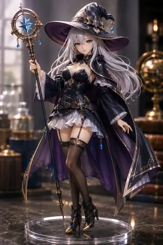
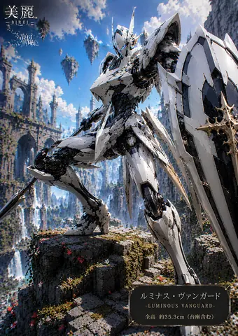
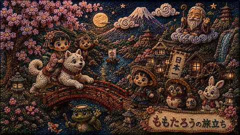

AI Art Preview Gallery / AIアートプレビューギャラリー
AICo Creation Lab
AICo Creation Lab creates Japanese-inspired aesthetics, fantasy illustration, 3D figure-style artwork, and watercolor expressions with AI. This site publishes lightweight previews and guides visitors to Patreon for full-resolution works and paid collections. Images that do not fill the 16:9 frame are portrait-ratio originals. Currently, most new images are created in 16:9 except manga pages, which use an A4-style layout. / 日本的な美意識、幻想イラスト、3Dフィギュア風アート、水彩表現をAIで制作しています。ここでは軽量プレビューを公開し、フル解像度版と有料コレクションはPatreonへ案内しています。枠内に収まっていない画像は縦長比率の画像です。現在、漫画（A4）以外では16:9の画像をメインに作っています。
3,231posted artwork previews
27visual style galleries
480pxlightweight thumbnail feed



